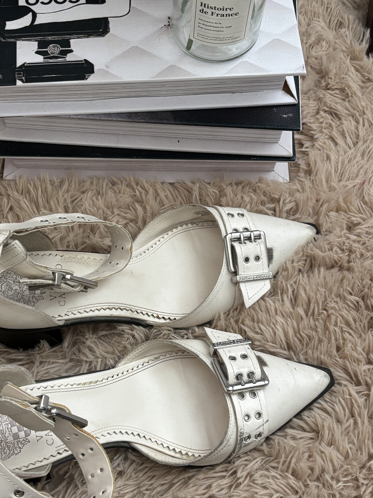
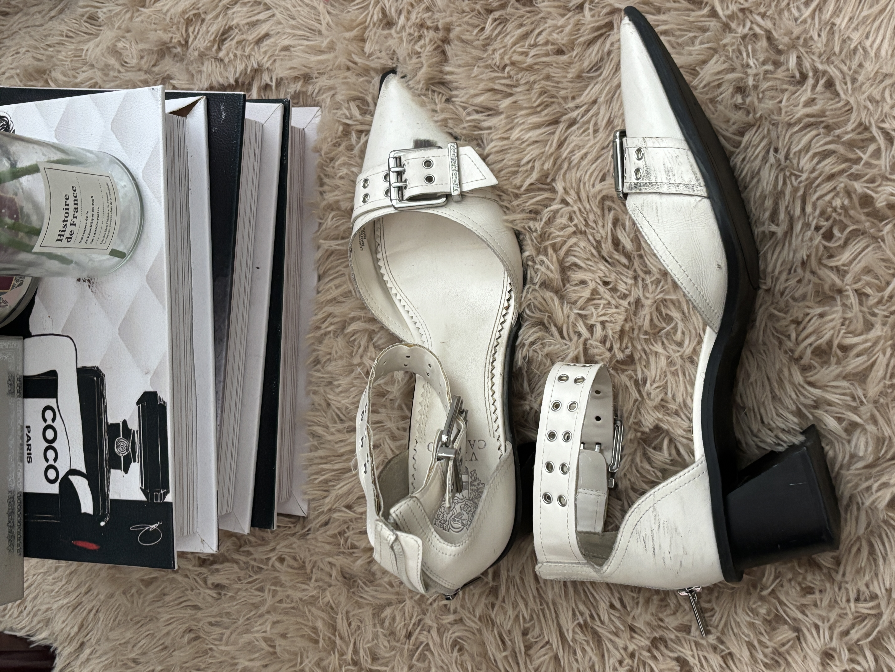
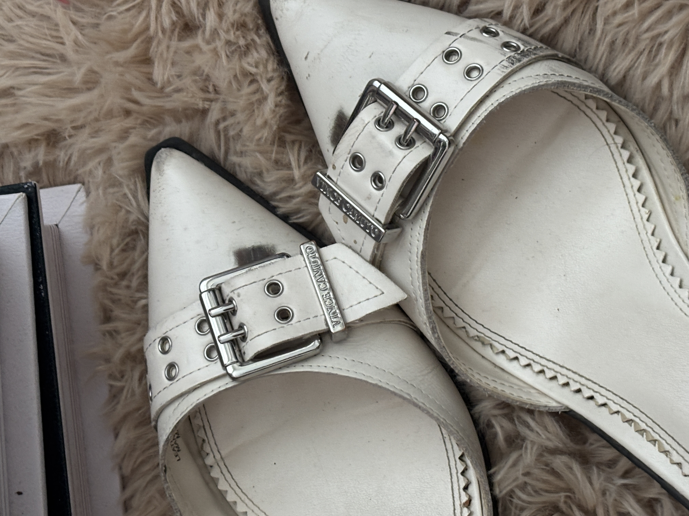
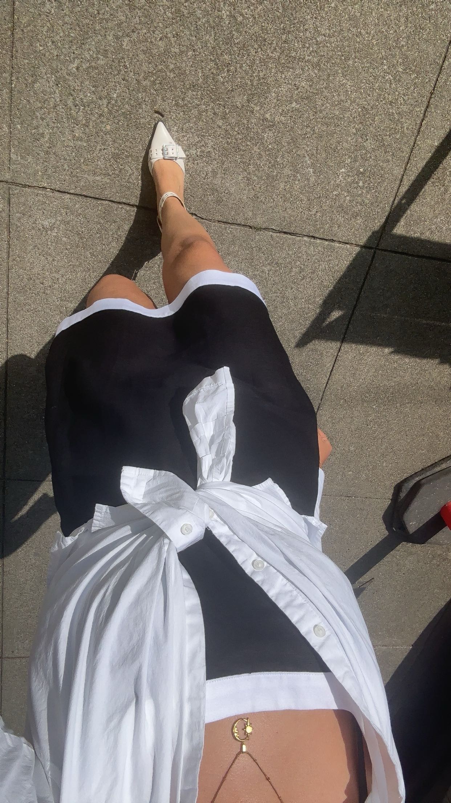

Vince Camuto
Buckle Up
Instantly spoke to me. Actually my most complimented shoe! Super cool girl vibes, goes with every outfit!
Details
- Material: leather
- Location: DSW
- Comfort: 7.2/10 - less heel, strap hurts sometimes
- Best for:dressing up jeans, causual dresswear